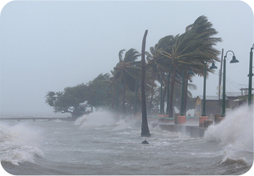
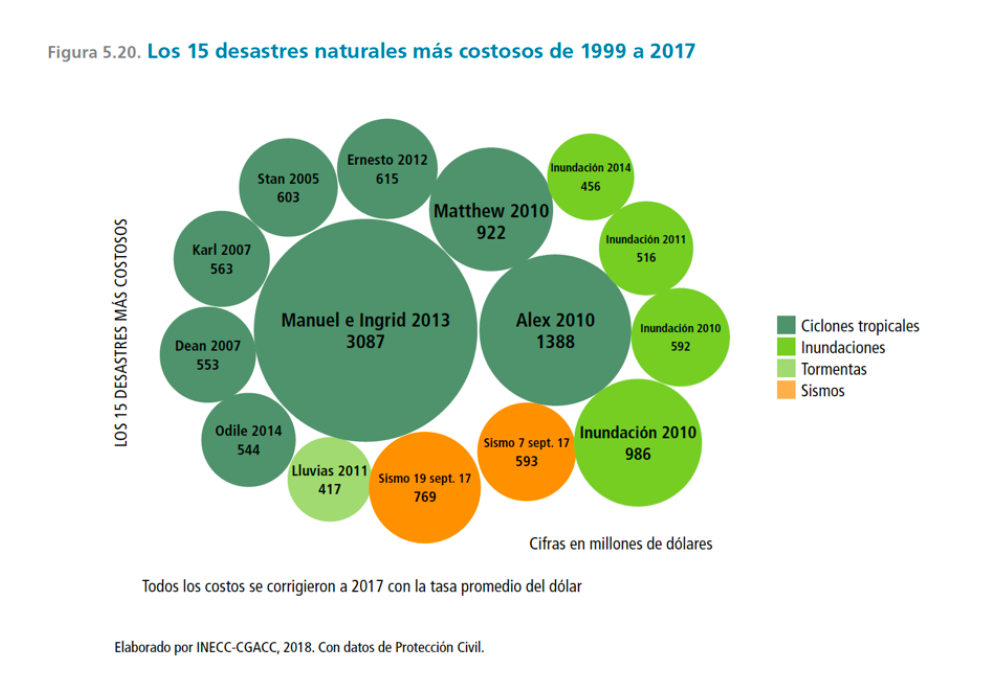

Cambio climatico
Impactos
Las condiciones socioeconómicas como la pobreza y las desigualdades, la fragilidad de los ecosistemas naturales y las características geográficas y climáticas de nuestro país, hacen que México sea sumamente vulnerable al cambio climático.
Los efectos del cambio climático ya son tangibles en el territorio nacional. En los últimos 50 años, las temperaturas promedio en el país han aumentado aproximadamente 0.85°C por arriba de la normal climatológica, lo que corresponde con el incremento global reportado por el Grupo Intergubernamental de Expertos sobre el Cambio Climático (IPCC, por sus siglas en inglés). Las temperaturas mínimas y máximas presentan una tendencia hacia un incremento de noches cálidas y una disminución de noches frías en todo el país. Se espera que entre 2015 y 2039 el promedio de la temperatura anual en el país haya aumentado 1.5°C y 2°C en el norte del territorio.
El aumento de la temperatura promedio en 1° C podría reducir el crecimiento del PIB per cápita nacional entre 0.77% y 1.76%.

En lo que se refiere a precipitación se observa que la distribución espacio-temporal ha cambiado de manera diferencial en el territorio, aunque la cantidad se ha mantenido. Lo anterior tiene impactos sobre los sistemas ecológicos y productivos, que son altamente sensibles a variaciones de temperatura y precipitación, pudiendo resultar en pérdidas económicas que podrían incrementarse a futuro bajo escenarios de cambio climático. Entre el 2015 y 2039 podría disminuir la precipitación anual entre un 10 y 20% aumentando las sequías intensass y prolongadas principalmente en el norte del país
*Temperaturas mas elevadas: En 2020 fue el año mas calurosos que se haya registrado, ya que la contaminacion se a elevado mucho a lo que la tierra se afecta causando un cambio climatico.
*Mas tormentas intensas: los cambios de temperatura le brinda lugar a las tormentas que podrian ser muy intensas y frecuentes.Provocan inundaciones destruyendo hogares y comunidades.
*Aumento a la sequia:El agua escasea en cada vez mas regiones,y lo que a provocado perdida de distribucion de granos, principalmente el maiz y a ocasionado incendios, ya que el aumento de la temperatura en los ultimos años a sido catastrofico.

| ant | menu |
|---|